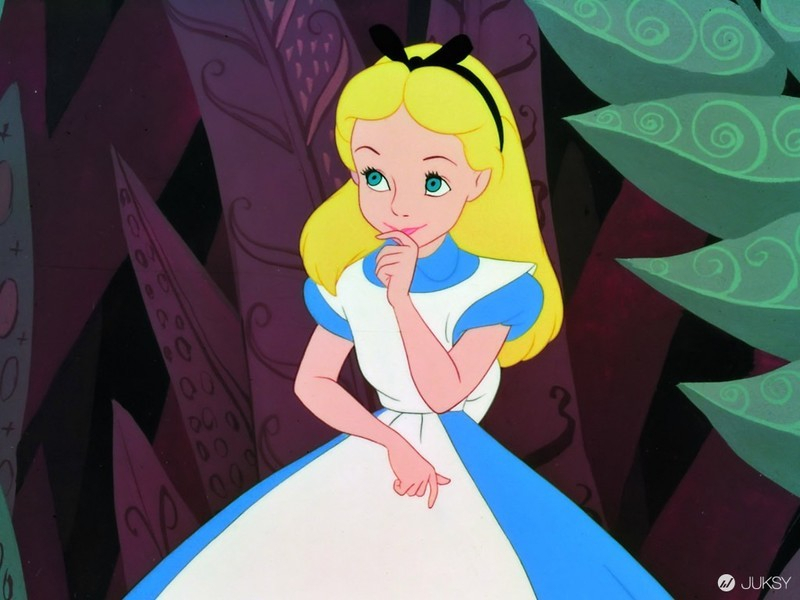

This is a transcript from Disney’s cartoon movie from 1951. I typed it out myself, so it is in no way ‘official’. That means that the original script may differ from this one, because I couldn’t always make out what they said (English is not my native language and mister Dodo sometimes speaks very inaudibly…). If you have any corrections, please let me know!It is on this page for personal use and fan purposes only, as a way of keeping Disney’s Alice in Wonderland movie alive in our memories and increasing the fan base around it. This material may not be used for any commercial or for profitable means in any way without permission from the Walt Disney Company.
"Why, sometimes I've believed as many as six impossible things before breakfast."If there's one thing that endears Alice in Wonderland to generations of readers, it's its charm. Some may call Alice naive for believing ."impossible things,"but those aren't the type of people who would chase a rabbit down its hole, so who needs them?"It's no use going back to yesterday, because I was a different person then."Alice (and many of Carroll's characters) are excellent at making statements that hold greater meaning. Alice is undergoing an identity crisis because she has grown and shrunk back down, but the literal conversation she has with the caterpillar lends itself to reflection about less physical types of changes."We're all mad here."The Cheshire Cat says this to Alice in one of the most concise descriptions of the strange world down the rabbit hole. Unlike the world Alice left behind, "mad" isn't necessarily a bad thing. Here (and as you're reading), you should embrace a side of you that is quirky and unpredictable, and maybe when you get back to reality, you'll want to take a little of that with you."Curiouser and curiouser!"Alice was so surprised by the strange circumstances she found herself in that she (and Carroll) made up a word, according to the Oxford English Dictionary. The expression is still used to mean that something is getting increasingly confounding."I don't think -- " "Then you shouldn't talk."This rather cheeky interruption of Alice by the Mad Hatter is why we love him but would also never want to meet him. Indeed, not having thoughts is an excellent reason to refrain from talking. But then again, the Hatter is one to talk.